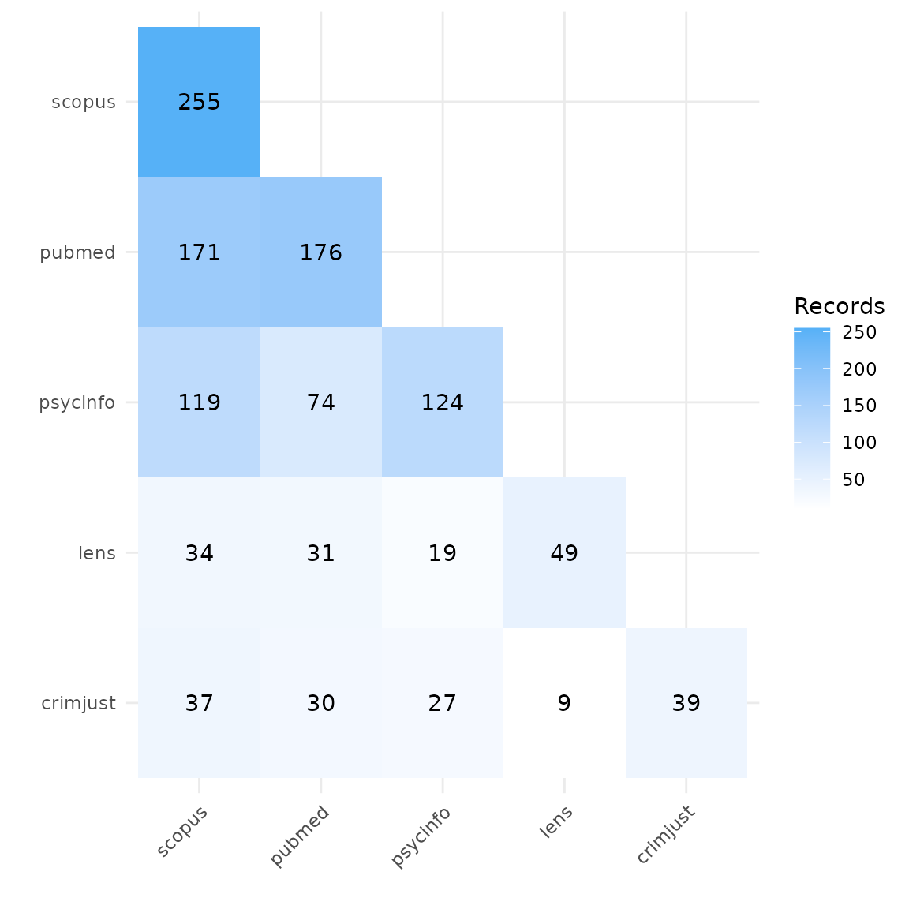
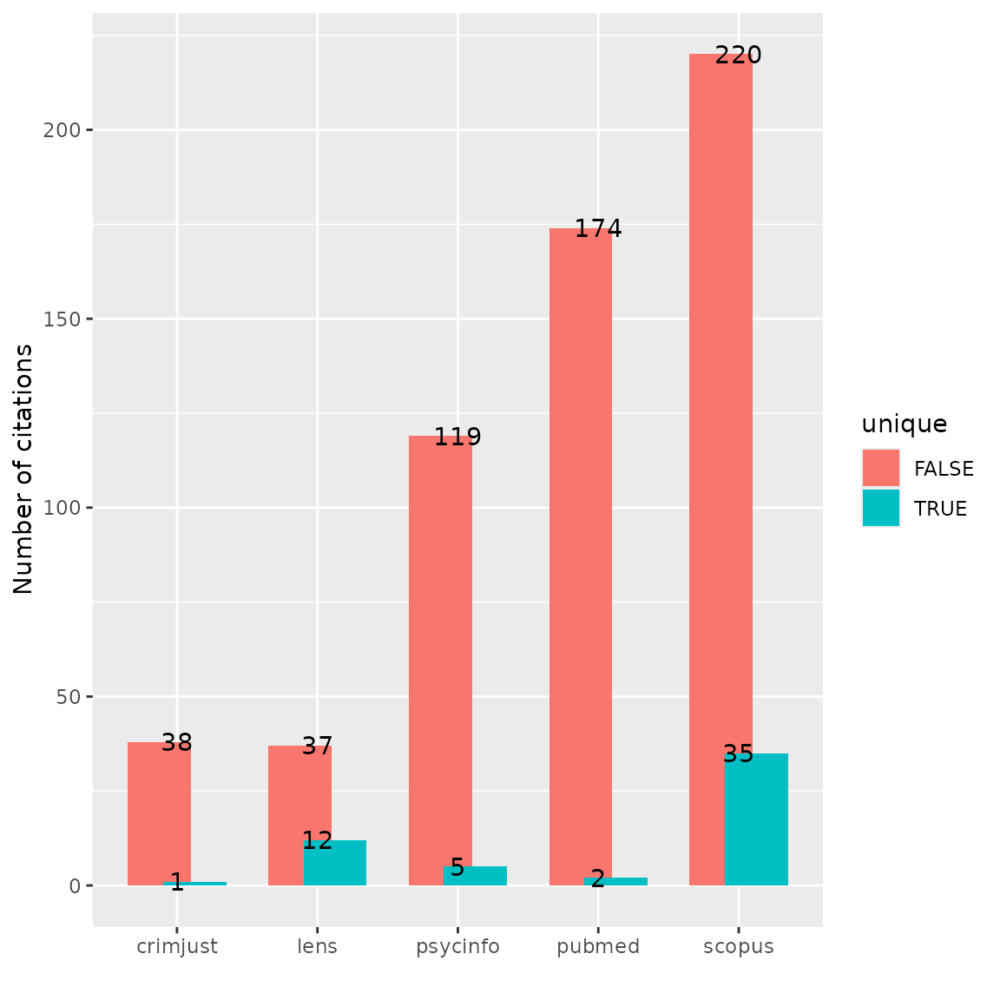
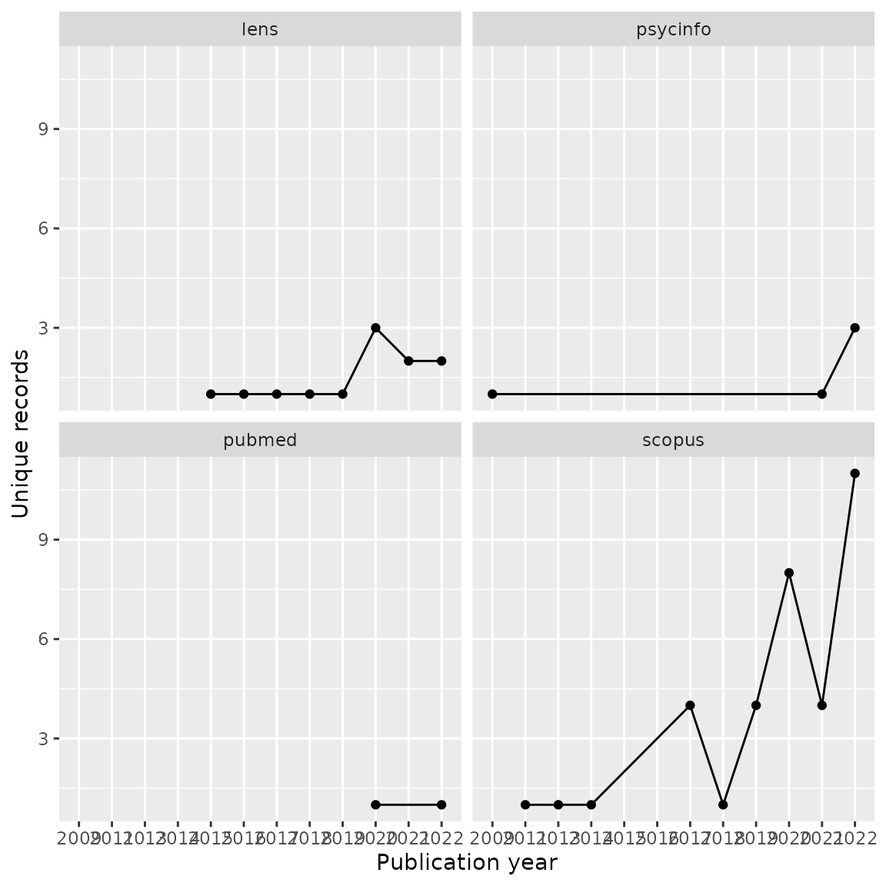

CiteSource - Example: Comparing Database Topic Coverage
2023-01-26
Source:vignettes/citesource_vignette_db-topic-coverage.Rmd
citesource_vignette_db-topic-coverage.RmdAbout the package
CiteSource provides users with the ability to deduplicate references while maintaining customizable metadata. Instead of the traditional deduplication method where records are removed and only one record is selected to be retained, CiteSource retains each duplicate record while merging metadata into a single main record. This main record maintains user-customized metadata in three fields, “cite_source”, “cite_label” and “tag_naming”. In the merging process, select metadata fields are also automatically compared (currently DOI & Abstract) and the most complete metadata is used in the main record.
About this vignette
CiteSource can be used to examine topical overlap between databases. In this example, we are interested in the overlap among databases, both multi-disciplinary and subject-specific, for the literature on the harmful effects of gambling addiction. To assess this, we ran a very specific search for the term “gambling harm*” in the title and abstract fields of the following databases: Lens, Scopus, Criminal Justice Abstracts, PsycInfo and Medline.
1. Installation of packages and loading libraries
Use the following code to install CiteSource. Currently, CiteSource lives on GitHub, so you may need to first install the remotes package. This vignette also uses functions from the ggplot2 and dplyr packages.
Import files from multiple sources
Users can import multiple RIS or bibtex files into CiteSource, which the user can label with source information such as database or platform.
# Import citation files from folder
citation_files <- list.files(path = "topic_data", pattern = "\\.ris", full.names = TRUE)
# Read in citations and specify sources. Note that labels and strings are not relevant for this use case.
citations <- read_citations(citation_files,
cite_sources = c("crimjust", "lens", "psycinfo", "pubmed", "scopus"),
tag_naming = "best_guess"
)
#> Import completed - with the following details:
#> file cite_source cite_string cite_label
#> 1 20221207_gambling-harms_crimjust_41.ris crimjust <NA> <NA>
#> 2 20221207_gambling-harms_lens_49.ris lens <NA> <NA>
#> 3 20221207_gambling-harms_psycinfo_124.ris psycinfo <NA> <NA>
#> 4 20221207_gambling-harms_pubmed_176.ris pubmed <NA> <NA>
#> 5 20221207_gambling-harms_scopus_255.ris scopus <NA> <NA>
#> citations
#> 1 41
#> 2 49
#> 3 124
#> 4 176
#> 5 255Deduplication and source information
CiteSource allows users to merge duplicates while maintaining information in the cite_source metadata field. Thus, information about the origin of the records is not lost in the deduplication process. The next few steps produce the dataframes that we can use in subsequent analyses.
# Deduplicate citations
dedup_results <- dedup_citations(citations, merge_citations = TRUE)
# Get unique citations. This yields a dataframe of all records with duplicates merged, but the originating source information maintained in a new variable called cite_source.
unique_citations <- dedup_results$unique
# Count number of unique and non-unique citations from different sources and labels.
n_unique <- count_unique(unique_citations)
# For each unique citation, determine which sources were present
source_comparison <- compare_sources(unique_citations, comp_type = "sources")Plot heatmap to compare source overlap
Heatmap by number of records
A heatmap can tell us the total number of records retrieved from each database, and can be used to compare the number of overlapping records found in each pair of databases. In this example, we can see that Scopus yielded the highest number of records on gambling harms, and Criminal Justics Abstracts the least.
# Generate source comparison heatmap
plot_source_overlap_heatmap(source_comparison)
Heatmap by percentage of records
Another way of visualizing this is a heatmap with percent overlap. We
can use the plot_type argument to produce a percentage
heatmap as follows. The total number of records appears in gray. The
percentages indicate the share of records in a row also found in a
column. For example, here we see that 67% of the records in Scopus were
also found in PubMed. Conversely, 97% of records in PubMed were found in
Scopus.
# Generate heatmap with percent overlap
plot_source_overlap_heatmap(source_comparison, plot_type = "percentages")Plot an upset plot to compare source overlap
An upset plot is another way of visualizing overlap and provides a bit more detail about the number of shared and unique records. Here, we can see that Scopus had the most unique records not found in any other database (n=35), and Criminal Justice Abstracts only had one unique record. Six records were found in every database.
# Generate a source comparison upset plot.
plot_source_overlap_upset(source_comparison, decreasing = c(TRUE, TRUE))Bar plots of unique and shared records
Bar plot of numbers of records
Bar plots can be another way of looking at overlap and uniqueness of
database contributions to a topic. We can use the
plot_contributions function to produce a bar plot, and then
use any ggplot2 functions to format it further.
# Generate bar plot of unique citations PER database as NUMBER
plot_contributions(n_unique, bars = cite_source, facets = NULL) +
labs(x = "", fill = "", title = "Contribution by source")Bar plot of percentages of records
We can also look at proportions. Interestingly, Lens seems to have the greatest proportion of unique records on gambling harms.
# Starting from the plot_contributions function
p <- plot_contributions(n_unique, bars = cite_source, facets = NULL)
# Reset plot layers
p$layers <- NULL
# Use ggplot to make plot adjustments
p + geom_bar(position = "fill") +
scale_y_continuous(labels = scales::percent)Bar plot with labels
And one more option: a labeled bar plot with dodged bars. This is useful if we have very small numbers of unique records compared to the overall number of records.
# Generate dodged bar plot Unique/Crossover PER Source with labels
p <- plot_contributions(n_unique, bars = cite_source, facets = NULL)
# Reset plot layers
p$layers <- NULL
# Use ggplot to make plot adjustments
p + geom_bar(position = position_dodge(width = 0.5)) +
xlab("") +
ylab("Number of citations") +
geom_text(stat = "count", aes(label = after_stat(count)))
Analyzing unique contributions
When we’re trying to get a sense of relative database coverage for a
particular topic, in other words what a database contributes to a search
on a topic compared to other databases, we might want to look more
closely at the records that are only found in that database and not
appearing anywhere else. We can again make use of the output of the
count_unique function, this time also requesting the full
references. We use the dplyr function filter to
find the unique records contributed by single sources.
# Get unique records from each source with bibliographic data
unique_records <- count_unique(unique_citations, include_references = TRUE) %>% filter(unique == TRUE)
# Write this dataframe to a csv file to examine the various titles contributed uniquely by each source.
#write.csv(unique_records, "unique_records.csv")
# Print table of unique records by source
unique_records %>% count(cite_source)
#> # A tibble: 5 × 2
#> cite_source n
#> <chr> <int>
#> 1 crimjust 1
#> 2 lens 12
#> 3 psycinfo 5
#> 4 pubmed 2
#> 5 scopus 35Analyze journal titles
Now we can take a deeper dive into the unique records contributed by each source. For example, let’s look at the top journal titles in Scopus that produced unique records on gambling harms not found in any other database.
# Analyze journal titles for unique records
scopus_journals <- unique_records %>%
filter(cite_source == "scopus") %>%
group_by(journal) %>%
summarise(count = n()) %>%
arrange(desc(count))
# Use the knitr:kable function to print a nice looking table of the top 10 journals
kable(scopus_journals[1:10, ])| journal | count |
|---|---|
| International Gambling Studies | 5 |
| Current Addiction Reports | 3 |
| International Journal of Mental Health and Addiction | 3 |
| Journal of Gambling Issues | 3 |
| Computers in Human Behavior | 2 |
| Journal of Public Health (Germany) | 2 |
| Applied Research in Quality of Life | 1 |
| Canadian Journal of Addiction | 1 |
| Cognition and Addiction: A Researcher’s Guide from Mechanisms Towards Interventions | 1 |
| Critical Public Health | 1 |
Analyze publication years
We may also want to look at publication years of unique records. For example, perhaps one databases coverage is better for earlier research. Let’s look at the publication years of the 35 unique records from Scopus. We can see these are mostly very recent records, which may indicate a more up-to-date and current collection on gambling harms in the Scopus database.
# Group by year, count and produced a line graph
unique_records %>%
filter(cite_source == "scopus") %>%
group_by(year) %>%
summarise(count = n()) %>%
ggplot(aes(year, count, group = 1)) +
geom_line() +
geom_point() +
xlab("Publication year") +
ylab("Unique records")We can also compare publication years of unique records across each
database by using the facet_wrap feature of
ggplot.
# Group by year and source, count and produced a faceted line graph
unique_records %>%
mutate(year = as.numeric(year)) %>%
group_by(cite_source, year) %>%
summarise(count = n()) %>%
ggplot(aes(year, count, group = 1)) +
geom_line() +
geom_point() +
facet_wrap(~cite_source) +
xlab("Publication year") +
ylab("Unique records")